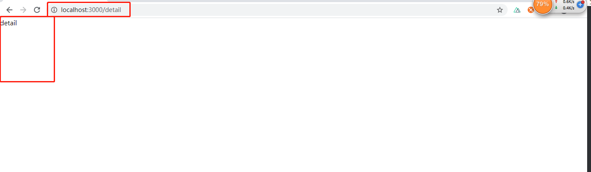
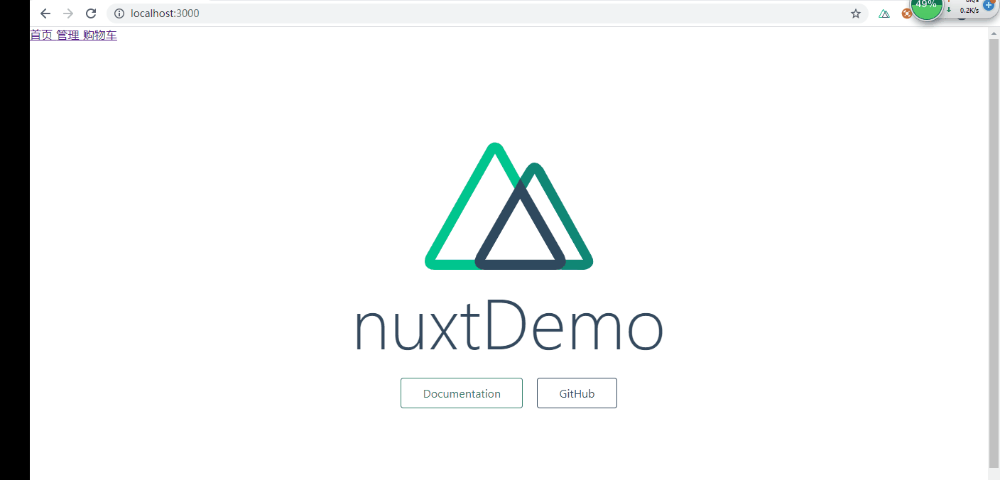
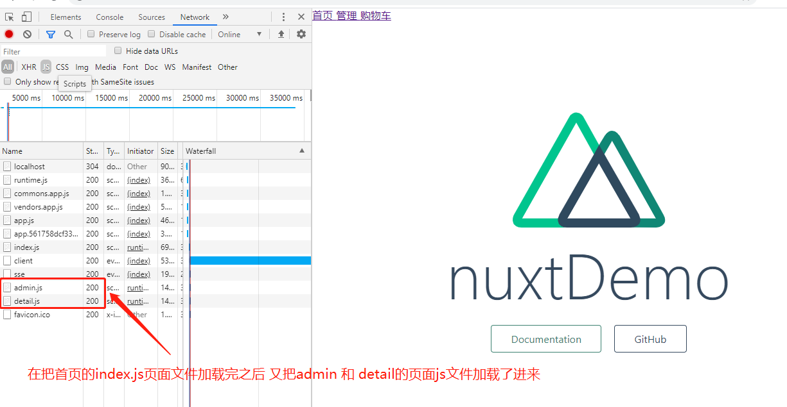
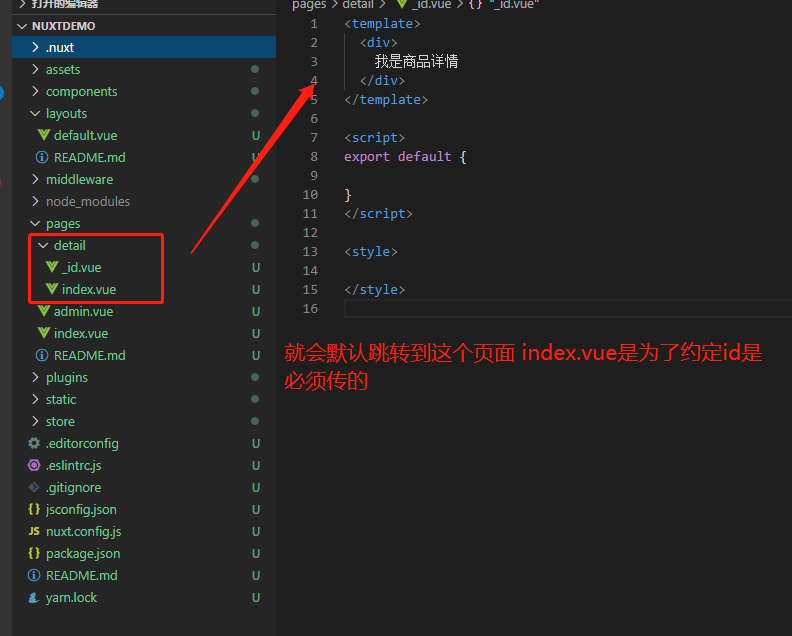
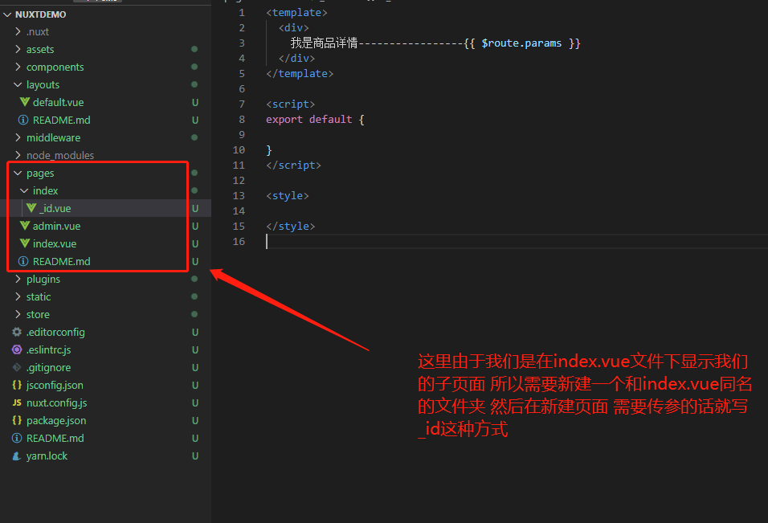
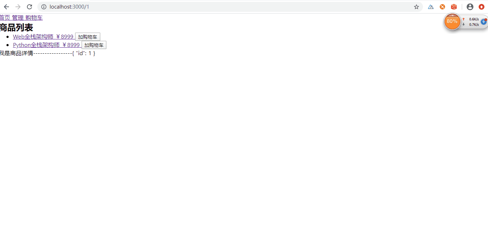

SSR 之 服务端渲染
nuxt安装
1 | 1.npx create-nuxt-app <项目名称> //相当于先全局安装 npm i nuxt 然后在创建一个项目 两个命令执行在一起了 |
路由的生成
1 | 1.首先我们需要在你的page下的文件目录里去创建你的页面 |
1 | // pages/detail.vue pages文件夹 新建了一个页面 这个时候路由就会自动帮我们添加进去 |

1 | 以上我们新建了一个页面 detail文件 这个时候路由就会自动帮我们生成路由 这里是一级路由 我们可以通过 访问浏览器地址的detail路径访问到 |


视口
1 | 1.首先我们的项目创建完毕之后会自动生成一个layout的文件夹 里面有default.vue文件 这个相当于我们前台的app.vue文件 |
导航跳转
1 | 1.我们在传统的Vue项目里 是通过<router-link></router-link> 标签 to属性去指定跳转的地址 |
1 | <template> |

预加载
1 | 1.ssr渲染 所有的页面都采用了预加载 好比我们现在有首页 和admin页面 他会把首页的js文件加载进来之后 又去加载admin的js页面文件 |

1 | 2.有的时候 我们有些页面 不需要预加载 只有在点击的时候才去加载 只需要在跳转的 标签上 粘贴图下即可 |
1 | <template> |
路由跳转的传参
1 | 1.我们往往需要在跳转路由的时候带过去一些参数 以前前台渲染的时候 是需要在路由文件里配置{path:'/detail/:id'} |
1 | 比我们的商品列表 跳转到 我们的商品详情列表 是需要带着当前你点击的商品 然后把ID通过地址栏的传过 |
1 | <template> |
1 | 此时我我们就需要在pages下 新建一个文件夹detail 然后在此文件夹下新建一个_id.vue文件 这个时候我们的路由文件也会自动生成 如下 当我们在点击跳转的时候 他就会自动的去往detail文件夹下的_id.vue文件去跳转 |


动态路由传参的获取
1 | 1.还是通过$route.params 可以获取到 |
动态路由多个传参
1 | 1.刚刚上面我们从商品列表跳转到商品详情的时候 值传了ID过去 现在想把价格也传过去 |
1 | <template> |
1 | 这个时候 由于我们传递的是两个参数 所以就需要在detail文件夹下 新建 _id文件夹 在_id文件夹下新建_price.vue文件 |


路由的query传参
1 | 1.我们这里依然可以使用编程式导航去跳转 this.$router.push |
1 | <template> |
1 | <!--商品详情页面--> |

嵌套视口
1 | 1.如果我们需要在一个页面下面有一个视口 当点击按钮的时候去跳转不同的页面 首先我们需要在当前页面 添加一个 路由视口标签 |
1 | 1.上面的例子我们看到 当我们商品列表跳转到详情页面的时候 其实换了一个页面 |
1 | <template> |

1 | 1.上面写完之后 我们的路由文件生成如下 |


多套布局
1 | 1.同通过上面的学习我们可以知道 我们在pages文件夹下 每次创建一个文件 就会对应生成一个路由地址 而这些最终页面文件都会走 我们layout文件夹下 default.vue 的视口 |
1 | <!--layout文件夹下 default.vue文件 我们自己的些的页面文件默认都会走这个视口--> |
1 | 2.如果此时我们有别的页面文件 要走指定的路由视口 就需要我们自己去配置 |
1 | <!--pages文件夹下的login.vue文件--> |
1 | <!--这里需要在layout文件夹下 新写一个视口文件 名字是我们上面login指定的那个--> |
head函数
1 | 1.我们的每个vue文件 都会有不同的nuxt的函数 |
如何发送请求
1 | 1.首先这里我们还需要用axios去发送请求 这里需用装一下包 npm install @nuxtjs/axios -S nuxt整合axios的包 |
配置：nuxt.config.js
1 | modules: [ |
asyncData函数 获取异步数据
1 | 1.asyncData 方法使得我们可以在设置组件数据之前异步获取或处理数据。 |
发送请求
1 | <template> |
中间件
1 | 1.中间件 首先我们需要在middleware文件夹下 创建一个js文件 导出一个函数 所有所有页面跳转之前就会执行你这个函数 这个函数里的形参 我们可以拿到很多东西 比如你的route redirect 和 store 等等 |
1 | 1.这里我们先展示页面跳页面 比如我们从A页面 到 B页面的时候 需要走中间件 而A - C 不用 |
1 | //middleware 文件夹 新建中间件函数auth.js文件 这里我们能通过形参拿到很多我们有用的饿参数 |
1 | <!--然后我们需要在走中间件的B 页面 写上如下配置 以后只要有别的页面走到我们的B页面的时候 都会先走auth.js文件--> |
1 | 2.全局中间件的配置 就是所有的页面之间的跳转都要走我的这个中间件 |
1 | //只需要在nuxt.config.js的 router里配置接可 |
nuxt中的vuex的使用
1 | 1.不需要再去挂在index文件 只需要再store文件夹目录下创建对应的store模块即可 下面是user模块 |
nuxt插件注入 inject方法
1 | 1.这里我们用接口函数去举例 我们以前再页面掉接口函数的时候 都需要用import导入接口函数文件 |
1 | //步骤 |
配置请求拦截
1 | 1.配置和上面一样 还是需要再plugin里写请求拦截文件 |
1 | //配置 plugin-> interceptor.js |
关于cookie
1 | 1.首先我们的是服务端渲染 cookie是存放在服务端的 所以 当我们刷新页面的时候 你没有办法获取到服务端的cookie 还是会让你去登录页面 |
1 | 1.安装 cookie-universal-nuxt 模块 |
公告
感谢访问本站，如喜欢请收藏。本站主要分享前端知识，立志成为资深前端工程师，但目前是一个前端界的小学生 若喜欢可以打赏请博主喝一杯冰阔落
另外请大家多多支持淼哥的开源项目
https://github.com/flipped-aurora/gin-vue-admin
🌟🌟欢迎大家start 🌟🌟
欢迎加入博主的前端技术交流群